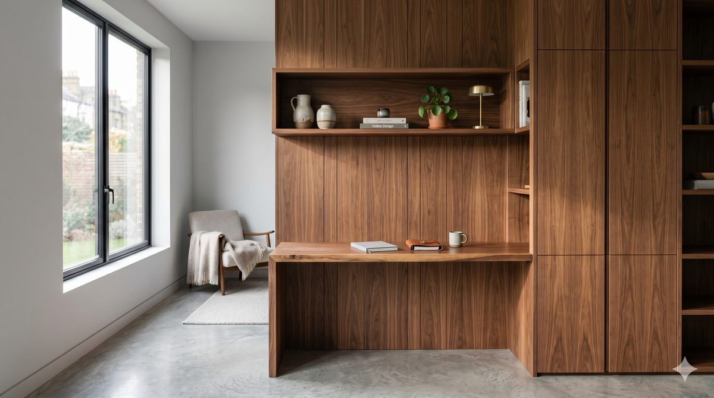
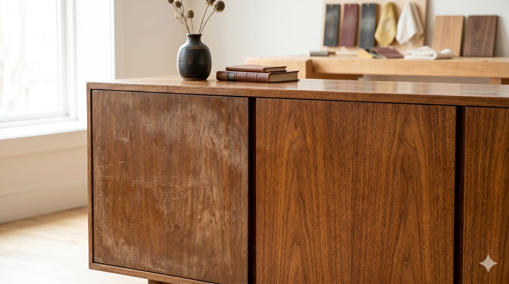
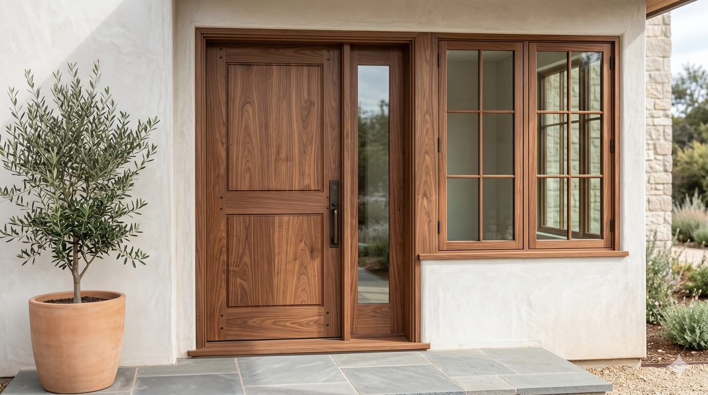
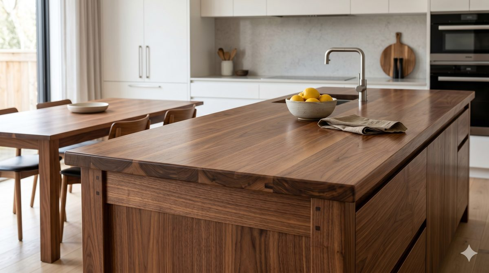
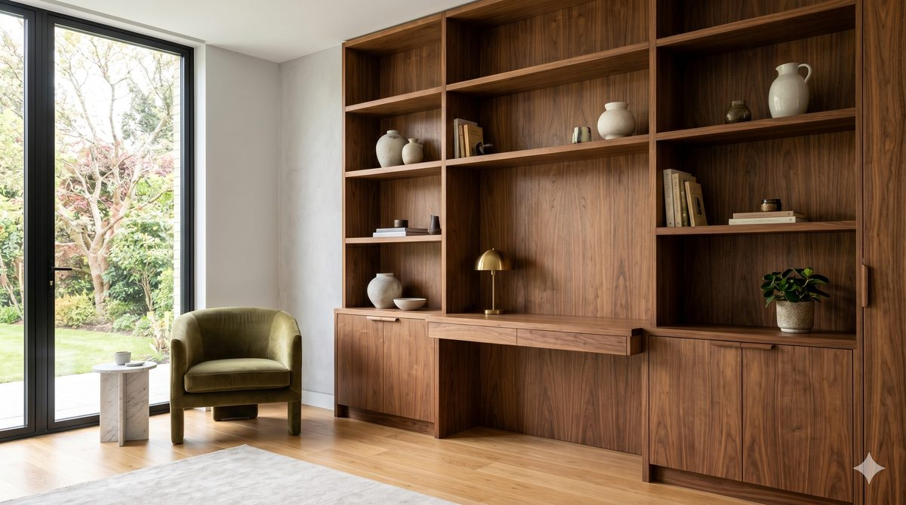
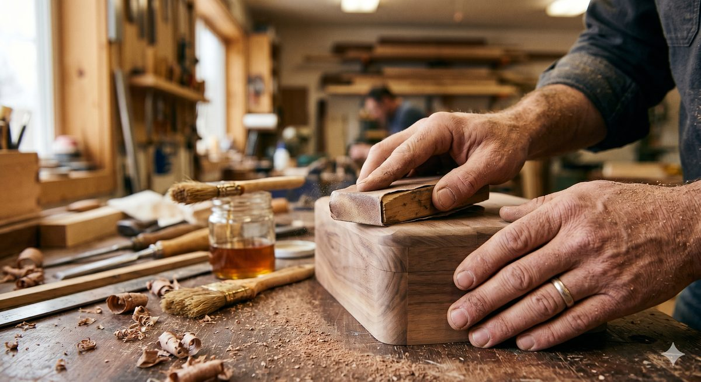

Padronizado demais
Móveis feitos em série não respeitam a medida exata, o pé-direito ou o jeito como você vive a casa.
São Sebastião do Paraíso · Minas Gerais · desde a década de 1970
Móveis sob medida e carpintaria artesanal para quem valoriza durabilidade, beleza e história. Três gerações da família Queiroz trabalhando a madeira à mão, peça por peça — do projeto ao acabamento.
A maior parte do que se vende hoje nasce de um catálogo: peças padronizadas, pensadas para caber em qualquer espaço e, por isso mesmo, não pensadas para o seu espaço. São bonitas na vitrine e frágeis no dia a dia.
Móveis feitos em série não respeitam a medida exata, o pé-direito ou o jeito como você vive a casa.
Chapas e acabamentos baratos incham, soltam e perdem o sentido em poucos anos. O que deveria durar décadas, dura temporadas.
Quem procura uma peça com alma, história e personalidade dificilmente a encontra entre soluções genéricas e impessoais.
Quem valoriza um móvel que dura, que tem presença e que combina com a própria vida quase sempre esbarra na mesma dúvida: ainda existe quem trabalhe com madeira maciça, com cuidado e com tempo?
A Queiroz Marcenaria e Carpintaria é uma das poucas marcenarias da região que ainda trabalha com madeira de verdade — não apenas MDF ou móvel planejado de linha. Cada projeto é desenhado para o seu espaço, construído à mão e acabado com o rigor de quem assina o próprio trabalho.
Tiramos as medidas, entendemos o uso e projetamos a peça para o lugar onde ela vai viver — não para um catálogo.
Mais de 50 anos escolhendo, secando, encaixando e dando acabamento à madeira. Conhecimento que não se aprende em um curso rápido.
A mão experiente do mestre marceneiro somada à formação dos filhos em Engenharia de Produção e Administração: ofício tradicional, processo organizado.
Tudo começou com Pedro Queiroz, que fez da marcenaria o seu ofício e a sua vida. Foi dele que veio o gosto pela madeira, o respeito pela ferramenta bem afiada e a ideia simples de que um móvel bem feito acompanha uma família por gerações.
Esse aprendizado passou para Luismar Naves Queiroz, filho de Pedro, que herdou não só a profissão, mas a forma de trabalhar. Há mais de 30 anos à frente da marcenaria, é ele quem garante, todos os dias, que cada peça saia da oficina do jeito que tem de sair.
Hoje, a história ganha mais dois capítulos. Luismar Marçal Naves Queiroz Filho, formado em Engenharia de Produção, e Thales Marçal Naves Queiroz, formado em Administração pela UFLA, trazem para a marcenaria a organização e a visão de uma nova geração — sem nunca abrir mão do que sempre fez a diferença: o trabalho manual, feito com calma e com madeira de verdade.
São mais de 50 anos de história e três gerações ligadas à mesma madeira. Tradição que não ficou no passado: continua viva, em cada projeto que entregamos.
O fundador. Quem plantou o ofício e o respeito pela madeira.
Administrador atual. Há mais de 30 anos liderando a oficina e o acabamento de cada peça.
Engenharia de Produção e Administração (UFLA) somadas ao ofício de família.
Construir móveis e estruturas de madeira que durem, que tenham identidade e que façam sentido na vida de quem os recebe.
Manter viva, em São Sebastião do Paraíso, a marcenaria de verdade — provando que tradição e bom acabamento ainda têm lugar.
Honestidade no que se promete, capricho no que se faz e respeito por quem confia um projeto às nossas mãos.
Cada tábua tem veio, cor e caráter próprios. Trabalhar madeira maciça é deixar essa história aparecer, não escondê-la.
Não fazemos a peça que cabe no catálogo. Fazemos a peça que cabe na sua casa, na sua rotina e no seu jeito de viver.
Honramos o ofício de sempre, mas usamos organização, planejamento e a visão da nova geração para entregar melhor.
O que diferencia um móvel comum de um móvel bem feito está nos cantos, nos encaixes e no toque final. É aí que caprichamos.
Preferimos conversar, entender e fazer certo. Cliente satisfeito volta e indica — e é assim há mais de 50 anos.
Tudo feito sob medida, em madeira de verdade, com acabamento de marcenaria tradicional.
As imagens desta seção são referências conceituais geradas por IA para ilustrar possibilidades de projeto. Fotos reais de trabalhos podem ser adicionadas futuramente.

Mesas, armários, estantes, camas e peças pensadas para o seu espaço e o seu uso — não para um padrão de loja.
Conversar sobre este projeto →
Devolvemos vida a móveis antigos e peças de família, preservando a história e recuperando a estrutura e o acabamento.
Conversar sobre este projeto →
Portas, janelas, batentes e estruturas de carpintaria feitas em madeira, sob medida e com encaixe firme.
Conversar sobre este projeto →
Bancadas, mesas, armários e peças sob encomenda, com a madeira e o acabamento escolhidos junto com você.
Conversar sobre este projeto →
Para casas, sítios, fazendas, comércios e ambientes internos. Do rústico ao refinado, tudo desenhado para você.
Conversar sobre este projeto →
Pequenos reparos, regulagens, lixamento e acabamento em peças de madeira que merecem durar mais tempo.
Conversar sobre este projeto →Depoimentos reais de clientes podem ser adicionados aqui depois.
Este espaço está preparado para receber a opinião de quem já recebeu um projeto da Queiroz.
Assim que houver autorização do cliente, o relato real entra neste lugar.
Preferimos não inventar nada: os depoimentos só aparecem quando forem reais e autorizados. Enquanto isso, o melhor retrato do nosso trabalho é a madeira que sai da oficina.
Não achou a sua resposta? É só chamar no WhatsApp — respondemos com prazer.
Sim. Trabalhar sob medida é a nossa essência. Tiramos as medidas do seu espaço, entendemos o uso e projetamos cada peça especialmente para você — do móvel único ao projeto completo.
Sim, é o que nos diferencia. Somos uma das poucas marcenarias da região que ainda trabalha com madeira maciça, e não apenas MDF ou móvel planejado de linha. Conversamos sobre o tipo de madeira mais indicado para cada projeto.
Nossa base é em São Sebastião do Paraíso (MG), onde estamos há mais de 50 anos. Atendemos a cidade e a região — incluindo casas, sítios, fazendas e comércios. Para entender o atendimento na sua localidade, chame no WhatsApp.
Com certeza. O WhatsApp é o caminho mais rápido para começar. Você nos conta a ideia, manda fotos ou medidas se já tiver, e a gente conversa sobre as possibilidades e os próximos passos.
Sim. Restauramos móveis antigos e peças de família com cuidado, preservando a história e devolvendo estrutura, firmeza e acabamento. É um dos trabalhos de que mais gostamos.
É simples: você fala com a gente pelo WhatsApp e conta o que precisa. A partir daí, entendemos o projeto, alinhamos medidas, madeira e acabamento, e seguimos para o orçamento. Tudo conversado com calma, sem pressa e sem compromisso.
Sim, é o coração do nosso trabalho. Cada projeto é pensado para o seu espaço e o seu gosto — do estilo mais rústico ao mais refinado. Se você tem uma ideia, a gente ajuda a transformá-la em madeira.
Conte pra gente a sua ideia. Seja um móvel único, uma reforma ou um projeto inteiro, a Queiroz transforma madeira de verdade em algo feito para durar — e para ser seu.
Ou ligue: (35) 9981-7719